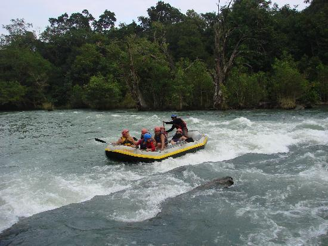
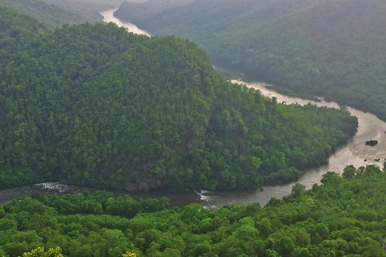
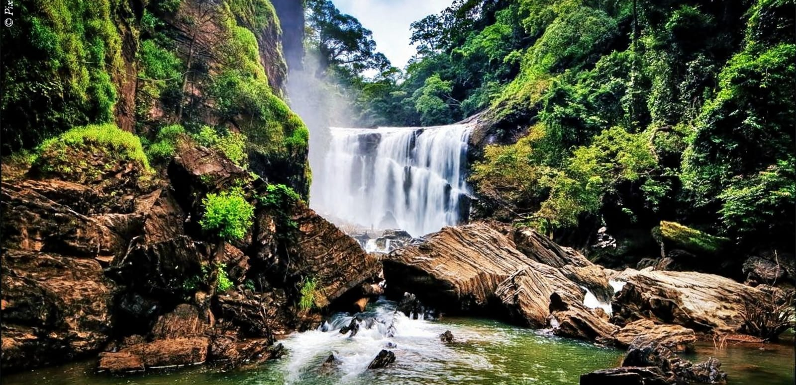
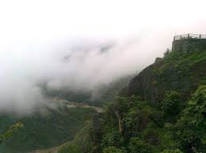
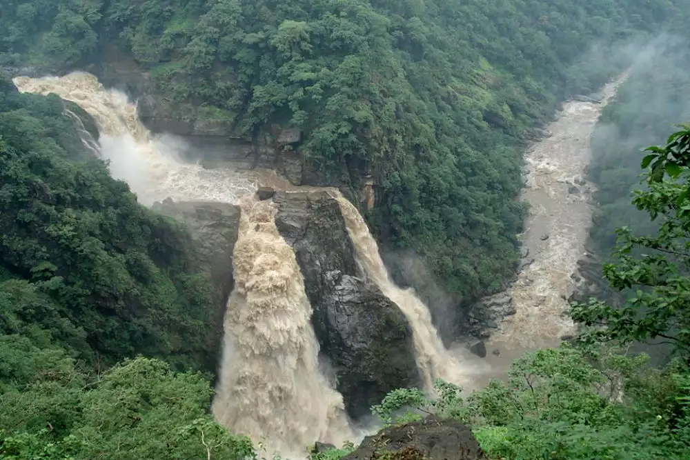
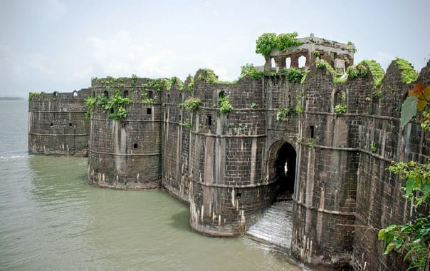
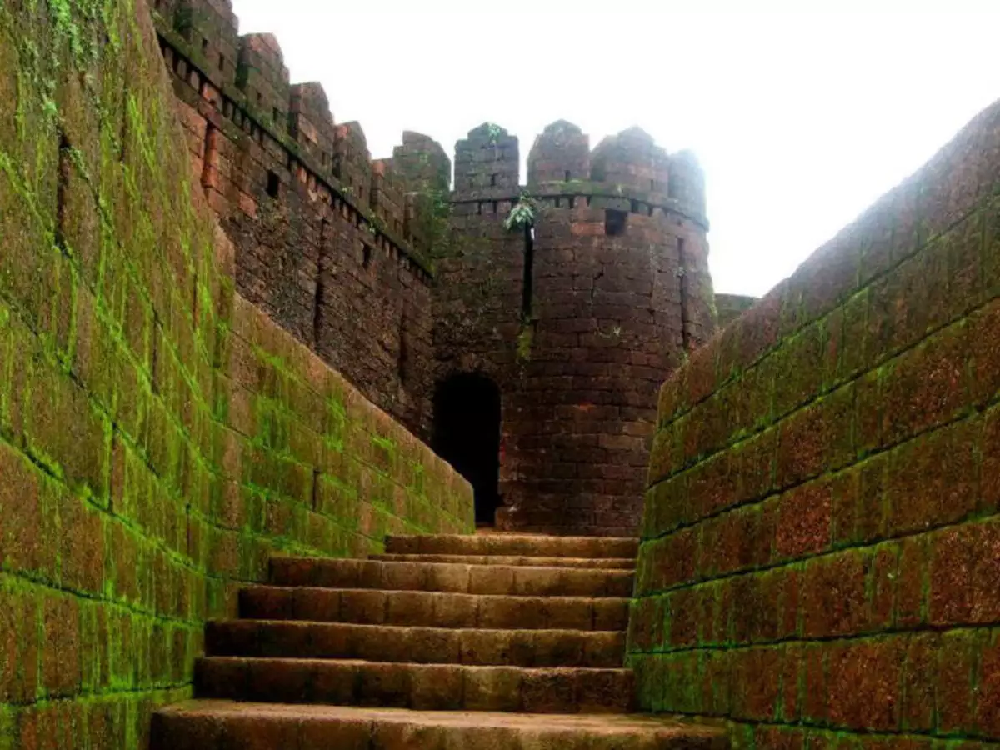

DANDELI
1.Dandeli Wildlife Sanctuary


Dandeli Wildlife Sanctuary is located at 15°30′23″N 74°23′30″E in Uttara Kannada District of Karnataka state in India.
The sanctuary covers an area of 866.41 km2 (334.52 sq mi).Along with neighboring Anshi National Park (339.87 square kilometres (83,980 acres)),
the sanctuary was declared part of the Anshi Dandeli Tiger Reserve in 2006. Karnataka state government has officially notified
the Dandeli Elephant Reserve under Project Elephant on 4 June 2015. The elephant reserve is spread over 2,321 km2,
including 475 km2 as core and the remaining as buffer areas. This is the second elephant reserve in Karnataka after Mysuru Elephant Reserve, which was declared in 2002.
The forests in Dandeli are a mixture of dense deciduous trees interspersed with bamboo and teak plantations. The sanctuary is rich in flora and fauna.
Crocodiles are major wildlife attraction in this sanctuary. It offers a unique experience of bird watching and crocodile spotting.
you can walk through the forest or enjoy bird watching. There are a variety of reptilian and amphibian species in and around the wildlife sanctuary.
best time to visit march to october.
2.Kali River Rafting


Dandeli is a popular adventure sports destination in Karnataka due to white water rafting opportunities in the Kali river. Experience the thrills of white water rafting
on some unpredictable stretches of the Kali River in Dandeli – probably the best place after the options available in the Ganges.
There are many private operators along with Karnataka Forest department (state-run) organising rafting operations.
Other adventure activities include boating, Kayaking and Bird watching.
Kali River in Dandeli offers a rafting stretch of up to 12 kms. The stretch of river is covered with dense forests,
offers several grade 2 (simpler to negotiate) and grade 3 (needs a bit more effort) rapids making the rafting experience exhilarating,
adventurous and memorable. The 12 km rafting excursion lasts 3 to 4 hours end to end, including transportation from the resort to the starting point.
Rafting activity depends on the release of river water from nearby dams. Rafting activity will be suspended during the rainy season and when water levels are low.
Best time for rafting is from November till February.
3.Kavala Caves

.jpg)
At a distance of 24 km from Dandeli, 93 km from Sirsi, 120 km from Karwar and 139 km from Gokarna, Kavala caves are the natural caves located in
the heart of Dandeli Wildlife Sanctuary and is one of the popular points of interest in Dandeli.These caves are formed by volcanic activity ages
back and are situated deep with-in the forest. It is believed that these caves have been in existence since the prehistoric times.
Currently,
the caves are inhabited by numerous snakes and bats. Also known as Limestone Caves or Sidda, these caves are very small in dimension
and have a lot of stalagmite formations. At some places the opening gets smaller and visitors need to crawl through.
Visitors need to climb down 375 steps to reach the cave entrance. There is a temple at the entrance of the cave.
One has to crawl down 40 feet through winding, narrow tunnels to see the Shivalinga formed naturally. The narrow passage is dark and visitors
may have to carry a torch or use the candles sold there. Bulbs are lit only during Shivaratri when thousands of devotees visit the caves.
The Shivalinga is about 4 feet high and has a diameter of approximately 3-4 feet.
4.Sathodi Falls


Visit Sathodi Falls - formed by the union of several streams, it can be easily reached from Dandeli. Located near Kallarmanne Ghats in UttaraKannada District,
this 49.2ft cascade is one of the picturesque waterfalls in Karnataka. The guided activity would take around 9-10 hours to complete.
After reporting in Dandeli; at around 8.30 in the morning, take a jeep ride to the Sathodi Falls. On arrival at the waterfall site,
enjoy some leisure moments amidst the scenic beauty of the surroundings. Post lunch, you can go for fishing followed by swimming at the Pansoli Backwaters.
With the advent of the evening, drive back to Dandeli and mark the end of this delightful trip.
5.Shiroli Peak


Visit Shiroli Peak to enjoy the most enchanting views of the mountains of the Sahyadri Range and the breathtaking landscape that surrounds the hill.
One of the most preferred sightseeing places in Dandeli for tourists, Shiroli Peak is a great place to capture one of the most amazing views of the sunset of your life.
It is located inside the Dandeli Wildlife Sanctuary and serves as a great spot to enjoy the calm vibes of the scenery and appreciate some time
by yourself in a mesmerising setting.
The place is famous as the highest point of Uttara Kannada region and its height makes it a great destination for trekkers who can challenge themselves and nature
lovers who want to escape the turmoil of city life.
6.Shivaji Fort

